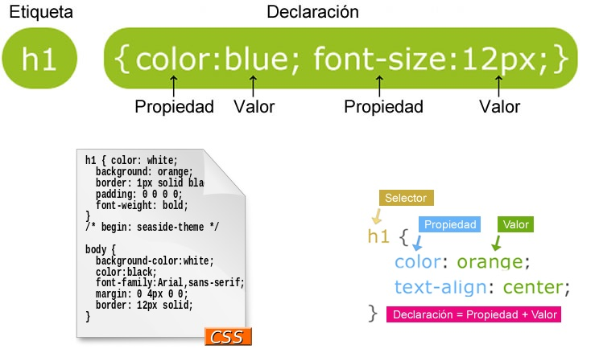

Ventajas de maquetar con CSS

Separación de forma y contenido. Generalmente CSS y HTML se encuentran en archivos separados, lo que facilita el trabajo en equipo porque diseñador y programador pueden trabajar independientemente. Por otro lado, permite el acceso a distintos navegadores y dispositivos.
Pilamunga Poveda, E. M., & DT-López Sevilla, G. M. (2012). El maquetado a base de scripts y hojas de estilo en cascada (CSS) y su incidencia en la optimización de un sitio web.
Tipos de propiedades 
Fuentes: tipos letra, tamaño, negrita, cursiva,...
Color: de texto, de fondo, imagen de fondo,...
Texto: justificación, espacio entre letras y/o palabras
Caja: bordes a los 4 lados
Formato visual: posición en la página, mostrar o no...
Tablas: similares a las tablas HTML pero no “ensucian” la página
Listas, numeración automática: permiten controlar el aspecto de las listas con viñetas y numeradas, y también numerar automáticamente párrafos o cualquier otra etiqueta
Colomina Pardo, O., Arques Corrales, P., & Montoyo-Bojo, J. (2011). Tema 2, parte 2: Hojas de estilo para la web. CSS. Tecnologías Web.